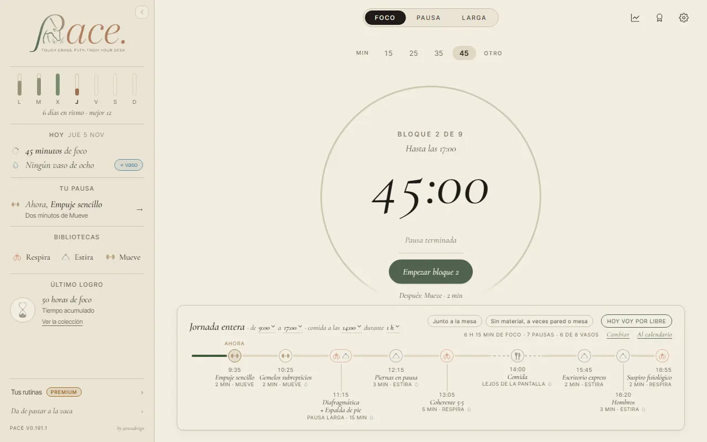
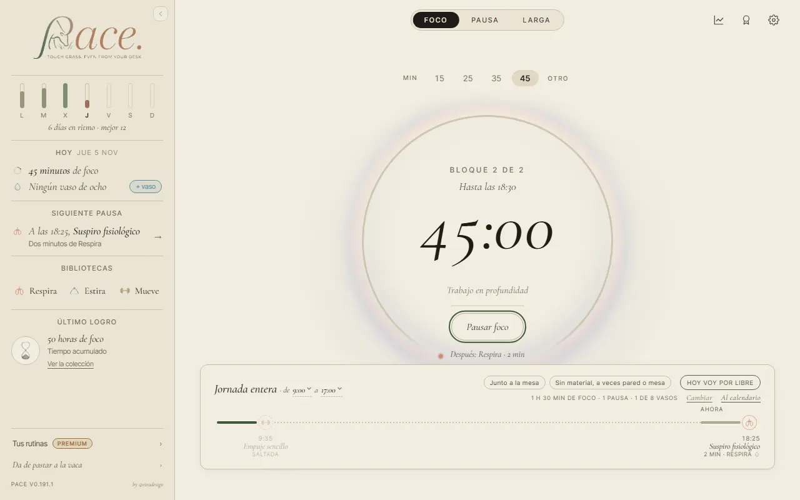
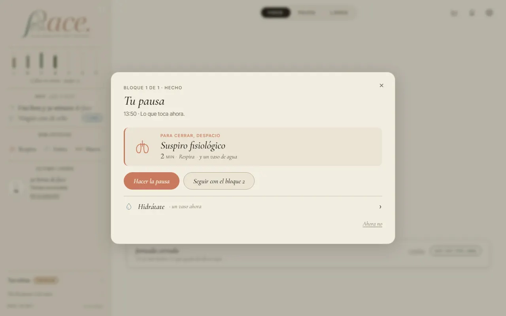
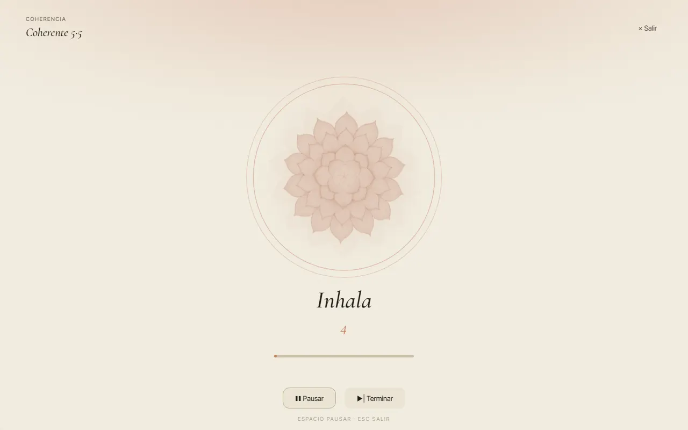
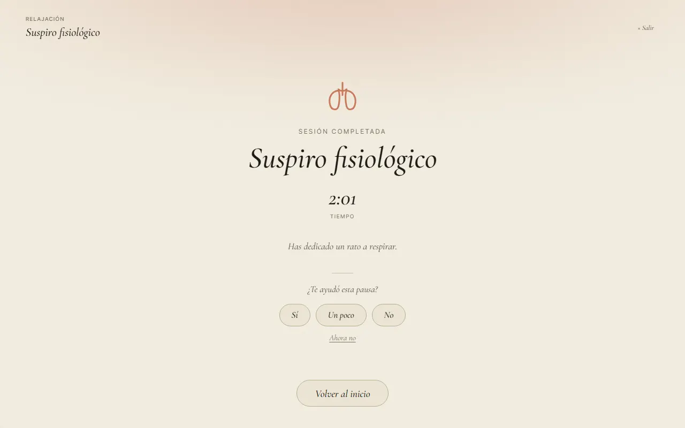
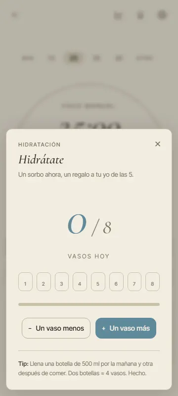
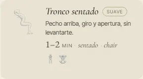
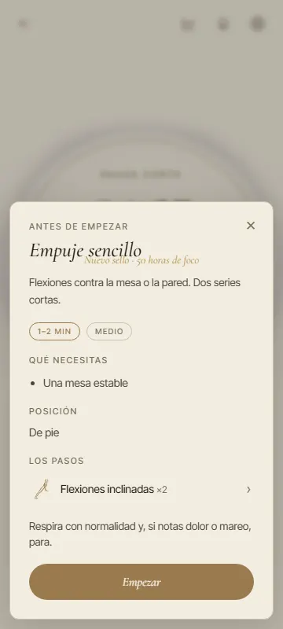

<title>Recorrido del 6 de noviembre</title>
<meta name="claude:viewport-fit-sides" content="cover">
<link rel="stylesheet" href="https://fonts.googleapis.com/css2?family=Cormorant+Garamond:ital,wght@0,500;1,500;1,600&family=Inter+Tight:wght@400;500;600&display=swap">
<style>
/* Una columna de lectura, como un cuaderno: cada pregunta con su foto y sus letras. Los colores y la
   letra son los de PACE (DESIGN_SYSTEM.md). */
:root {
  --papel: #F2EDE0; --papel-2: #EAE4D4; --tinta: #1F1C17; --tinta-2: #4A453C; --tinta-3: #77705F;
  --linea: #C9C0A8; --oliva: #3E5A3A; --terracota: #A85E43; --elegida: rgba(62,90,58,0.10);
  --display: "Cormorant Garamond", "EB Garamond", Georgia, serif;
  --ui: "Inter Tight", "Segoe UI", system-ui, sans-serif;
}
@media (prefers-color-scheme: dark) { :root:not([data-theme="light"]) {
  --papel: #1C1A16; --papel-2: #26231D; --tinta: #EDE6D6; --tinta-2: #C9C0AC; --tinta-3: #A39A86;
  --linea: #3E3A31; --oliva: #9DB894; --terracota: #E0A285; --elegida: rgba(157,184,148,0.14); color-scheme: dark } }
:root[data-theme="dark"] {
  --papel: #1C1A16; --papel-2: #26231D; --tinta: #EDE6D6; --tinta-2: #C9C0AC; --tinta-3: #A39A86;
  --linea: #3E3A31; --oliva: #9DB894; --terracota: #E0A285; --elegida: rgba(157,184,148,0.14); color-scheme: dark }
body { background: var(--papel); color: var(--tinta); font: 16px/1.55 var(--ui); }
.hoja { max-width: 760px; margin: 0 auto; padding-block: 40px 64px;
  padding-left: max(16px, env(safe-area-inset-left, 0px)); padding-right: max(16px, env(safe-area-inset-right, 0px));
  display: grid; gap: 40px; }
h1, h2 { font-family: var(--display); font-style: italic; font-weight: 500; text-wrap: balance; margin: 0; }
h1 { font-size: 2.4rem; line-height: 1.1; }
h2 { font-size: 1.7rem; line-height: 1.2; }
.ceja { font-size: .74rem; letter-spacing: .14em; text-transform: uppercase; color: var(--tinta-3); margin: 0 0 6px; }
p { margin: 0; max-width: 65ch; }
.intro { display: grid; gap: 12px; color: var(--tinta-2); }
.pregunta { display: grid; gap: 14px; padding-top: 28px; border-top: 1px solid var(--linea); }
.pregunta > * { min-width: 0; }
.fotos { display: grid; grid-template-columns: repeat(auto-fit, minmax(240px, 1fr)); gap: 12px; }
figure { margin: 0; display: grid; gap: 6px; }
figure img { width: 100%; border: 1px solid var(--linea); border-radius: 6px; display: block; }
figcaption { font-size: .85rem; color: var(--tinta-3); }
.letras { display: grid; gap: 8px; }
.letra { display: grid; grid-template-columns: auto 1fr; gap: 12px; align-items: start; padding: 12px 14px;
  border: 1px solid var(--linea); border-radius: 8px; cursor: pointer; }
.letra:has(input:checked) { background: var(--elegida); border-color: var(--oliva); }
.letra input { margin-top: 5px; accent-color: var(--oliva); }
.letra b { font-family: var(--display); font-size: 1.2rem; font-style: italic; margin-right: 6px; }
.rec { font-size: .78rem; color: var(--oliva); font-weight: 600; letter-spacing: .04em; margin-left: 6px; }
.respuestas { position: sticky; bottom: 0; background: var(--papel-2); border: 1px solid var(--linea); border-radius: 10px;
  padding: 14px 16px; display: flex; flex-wrap: wrap; gap: 12px; align-items: center; justify-content: space-between; }
.respuestas code { font: 600 1.05rem var(--ui); letter-spacing: .04em; }
button { font: 600 .95rem var(--ui); color: var(--papel); background: var(--oliva); border: 0; border-radius: 999px; padding: 10px 18px; cursor: pointer; }
button:focus-visible, .letra:focus-within { outline: 2px solid var(--oliva); outline-offset: 2px; }
.hecho { display: grid; gap: 10px; }
.hecho li { margin-bottom: 8px; }
ul { margin: 0; padding-left: 20px; max-width: 65ch; }
</style>

<main class="hoja">
  <header class="intro">
    <p class="ceja">PACE · recorrido del 6 nov. · lo que recibirán los testers</p>
    <h1>Cinco cosas que decidir</h1>
    <p>He usado la versión que va a la primera actualización como lo haría alguien de verdad: la primera vez, alguien con seis semanas de uso, una jornada entera de principio a fin y cada módulo, en el móvil, en el portátil y en tu ventana, en castellano y en inglés.</p>
    <p>Salieron ocho fallos. Tres eran de código y ya están arreglados (abajo del todo). Estos cinco necesitan que elijas. Marca una letra en cada uno y copia tus respuestas.</p>
  </header>

  <section class="pregunta" id="p1">
    <p class="ceja">1 · Volver tarde a una jornada</p>
    <h2>Si dejas la jornada por la mañana y vuelves pasada la hora de salida</h2>
    <p>Empiezas la jornada a las 9:00, cierras la ventana de la pausa de las 9:35 y te lías. A las 17:40 (tu salida era a las 17:00) PACE sigue diciendo «Bloque 2 de 9 · Hasta las 17:00 · Empezar bloque 2» y, a la izquierda, «Tu pausa · Ahora, Empuje sencillo». Si pulsas, empieza un bloque de 45 minutos hasta las 18:30.</p>
    <div class="fotos">
      <figure><figcaption>A las 17:40, sin tocar nada</figcaption></figure>
      <figure><figcaption>Tras pulsar «Empezar bloque 2»</figcaption></figure>
    </div>
    <div class="letras" role="radiogroup" aria-label="Pregunta 1">
      <label class="letra"><input type="radio" name="p1" value="A" id="p1a"><span><b>A</b>Pasada la salida, el día se cierra: el aro dice «Tu jornada ya terminó» con lo que hiciste, y si quieres sigues por libre.<span class="rec">RECOMENDADA</span></span></label>
      <label class="letra"><input type="radio" name="p1" value="B" id="p1b"><span><b>B</b>Sigue proponiendo bloques, pero nunca más allá de tu hora de salida.</span></label>
      <label class="letra"><input type="radio" name="p1" value="C" id="p1c"><span><b>C</b>Se queda como está.</span></label>
    </div>
  </section>

  <section class="pregunta" id="p2">
    <p class="ceja">2 · Un Foco más cuando el día ya acabó</p>
    <h2>Haces un Foco por libre después de tu último bloque</h2>
    <p>Al acabarlo, la ventana vuelve a decir «Bloque 1 de 1 · hecho» y te propone otra vez la pausa de cierre, aunque detrás el panel ya dice «Jornada cerrada». Debería ser la ventana de siempre, «Ciclo completado».</p>
    <div class="fotos">
      <figure><figcaption>13:50, tras un Foco libre (la media jornada acababa a las 13:00)</figcaption></figure>
    </div>
    <div class="letras" role="radiogroup" aria-label="Pregunta 2">
      <label class="letra"><input type="radio" name="p2" value="A" id="p2a"><span><b>A</b>La pausa de cierre cuenta como saltada en cuanto empiezas otra cosa, y el Foco libre acaba con la ventana de siempre.<span class="rec">RECOMENDADA</span></span></label>
      <label class="letra"><input type="radio" name="p2" value="B" id="p2b"><span><b>B</b>La pausa de cierre se sigue ofreciendo hasta que la hagas, pero sin decir «Bloque 1 de 1».</span></label>
    </div>
  </section>

  <section class="pregunta" id="p3">
    <p class="ceja">3 · La ventana que se queda abierta</p>
    <h2>Si acabas un Foco por la tarde y no tocas nada hasta el día siguiente</h2>
    <p>A las 8:40 de la mañana sigue abierta la ventana de ayer: «Ciclo completado · Has cerrado un bloque. Elige tu pausa.» Lo he visto dos veces seguidas.</p>
    <div class="letras" role="radiogroup" aria-label="Pregunta 3">
      <label class="letra"><input type="radio" name="p3" value="A" id="p3a"><span><b>A</b>Al cambiar de día, la ventana de ayer se cierra sola y ves la home del día nuevo.<span class="rec">RECOMENDADA</span></span></label>
      <label class="letra"><input type="radio" name="p3" value="B" id="p3b"><span><b>B</b>Se queda como está.</span></label>
    </div>
  </section>

  <section class="pregunta" id="p4">
    <p class="ceja">4 · La «× Salir» de Respira</p>
    <h2>Dos letras distintas para el mismo botón</h2>
    <p>Arriba a la derecha, durante la respiración «× Salir» va en letra recta; en «Sesión completada», en cursiva y más pequeña.</p>
    <div class="fotos">
      <figure><figcaption>Durante la sesión</figcaption></figure>
      <figure><figcaption>Al acabar</figcaption></figure>
    </div>
    <div class="letras" role="radiogroup" aria-label="Pregunta 4">
      <label class="letra"><input type="radio" name="p4" value="A" id="p4a"><span><b>A</b>La de la sesión, letra recta, en las dos pantallas.<span class="rec">RECOMENDADA</span></span></label>
      <label class="letra"><input type="radio" name="p4" value="B" id="p4b"><span><b>B</b>La cursiva en las dos.</span></label>
      <label class="letra"><input type="radio" name="p4" value="C" id="p4c"><span><b>C</b>Se queda como está.</span></label>
    </div>
  </section>

  <section class="pregunta" id="p5">
    <p class="ceja">5 · Los vasos de Hidrátate, para quien no ve la pantalla</p>
    <h2>Los ocho vasos se leen «uno, dos, tres…»</h2>
    <p>Con el lector de pantalla del móvil, cada vaso se anuncia solo con su número. No cambia nada de lo que se ve: es ponerles nombre, «Vaso 3 de 8».</p>
    <div class="fotos">
      <figure><figcaption>Los vasos, en el móvil</figcaption></figure>
    </div>
    <div class="letras" role="radiogroup" aria-label="Pregunta 5">
      <label class="letra"><input type="radio" name="p5" value="A" id="p5a"><span><b>A</b>Ponerles nombre («Vaso 3 de 8», «Glass 3 of 8»).<span class="rec">RECOMENDADA</span></span></label>
      <label class="letra"><input type="radio" name="p5" value="B" id="p5b"><span><b>B</b>Dejarlo para después de v1.</span></label>
    </div>
  </section>

  <div class="respuestas">
    <span>Tus respuestas: <code id="resumen">—</code></span>
    <button type="button" id="copiar">Copiar</button>
  </div>

  <section class="pregunta hecho" id="hecho">
    <p class="ceja">Ya arreglado, en la rama del recorrido</p>
    <h2>Tres fallos de código, cada uno con su prueba</h2>
    <ul>
      <li><b>«chair» sin traducir</b> en tres tarjetas de Estira («Tronco sentado», «Postura reset» y «Hombros»), en castellano y en inglés. Ahora dice «con silla».</li>
      <li><b>El aviso de un sello nuevo tapaba lo que abrías.</b> Si nada más cerrar la ventana de la pausa pulsabas «Hacer la pausa», «Nuevo sello · 50 horas de foco» salía encima del título de «Antes de empezar» y del ejercicio. Tu regla del 8 de octubre, «los sellos no deben pisar los elementos», ahora también vale para lo que se abre después.</li>
      <li><b>El último bloque ofrecía «Seguir con el bloque 2»</b>, un bloque que no existe. Ahora solo ofrece la pausa y «Ahora no».</li>
    </ul>
    <div class="fotos">
      <figure><figcaption>Antes: «sentado · chair»</figcaption></figure>
      <figure><figcaption>Antes: el sello sobre «Empuje sencillo»</figcaption></figure>
    </div>
  </section>
</main>

<script>
(function () {
  var nombres = ['p1', 'p2', 'p3', 'p4', 'p5'];
  var resumen = document.getElementById('resumen');
  function leer() {
    var out = nombres.map(function (n, i) {
      var x = document.querySelector('input[name="' + n + '"]:checked');
      return x ? (i + 1) + x.value : null;
    }).filter(Boolean);
    resumen.textContent = out.length ? out.join(' ') : '—';
    try { localStorage.setItem('recorrido6nov', JSON.stringify(out)); } catch (e) {}
  }
  try {
    var g = JSON.parse(localStorage.getItem('recorrido6nov') || '[]');
    g.forEach(function (r) { var el = document.querySelector('input[name="p' + r.charAt(0) + '"][value="' + r.slice(1) + '"]'); if (el) el.checked = true; });
  } catch (e) {}
  document.addEventListener('change', leer);
  leer();
  document.getElementById('copiar').addEventListener('click', function () {
    var b = this, txt = resumen.textContent;
    var hecho = function () { b.textContent = 'Copiado'; setTimeout(function () { b.textContent = 'Copiar'; }, 1600); };
    try { navigator.clipboard.writeText(txt).then(hecho, function () { seleccionar(); }); } catch (e) { seleccionar(); }
    function seleccionar() { var r = document.createRange(); r.selectNodeContents(resumen); var s = getSelection(); s.removeAllRanges(); s.addRange(r); }
  });
})();
</script>
